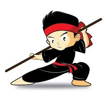

tentangku.com
Hobi
Ya inilah Hobi saya.. Yaitu olahraga pencak silat. Sejak dari kecil memang saya suka beladiri tetapi belom menguasai semua teknik. Dan akhirnya semenjak saya masuk SMP saya mencoba-coba mengikuti ekstrakulikuler Pencak silatDan saya pun ikut latihan. tetapi hari dami hari saya jarang masuk buat latihan karena tidak ada yang mengantar, setelah itu masuk SMKsaya mencoba mengikuti ekstrakulikuler pencak silat lagi, dan akhirnya saya ikut latihan dan saya usahakan tidak bolos untuk latihan. Karena saya ingin impian saya tercapai, yaitu menjadi pesilat yang handal. Dan satu lagi ada banyak juga manfaat silat loh!! Kalau mau tahu lihat aja di bawah nih
Manfaat Ikut Pencak Silat
- Melatih Tubuh Secara Total
- Meningkatkan Kepercayaan Diri, Konsentrasi, dan Moral
- Meningkatkan Kesehatan Jantung
- Menurunkan Berat Badan
- Meningkatkan Refleks
- Terlatih untuk Fokus dan Tenang
- Meningkatkan Kekuatan Otot
- Meningkatkan Mood.